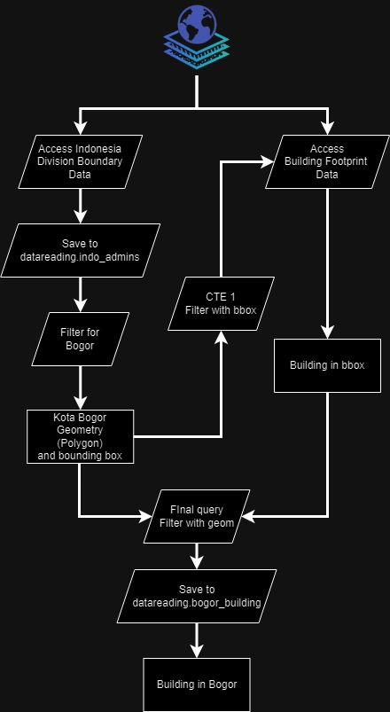
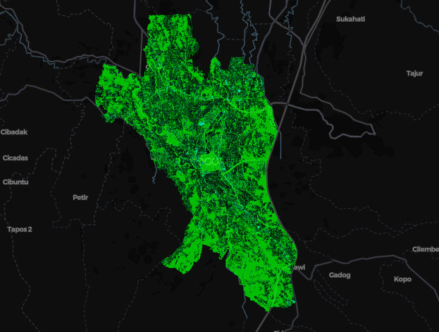

The End Result
This is what we are going to make today.

You can access my code here
The Workflow

The goal is quite straightforward, we want to extract building footprint data inside some administrative boundary, in this case, Kota Bogor.
First, we will have to access the administrative boundary data, in overture map
data, it's stored under division theme, with type of
division_area. Then we filter it by name to get the boundary of
Kota Bogor, extract 2 information out of it: the boundary polygon and the
bounding box. We need the bounding box to filter the building footprint data
from overture map data. I tried to filter the building footprint data directly
using spatial query (ST_Within()), but it seems that it will take
longer than just using the bounding box (I didn't even get the query completed
because of how long it is, so I'm not even sure it will work).
After we get the roughly filtered building footprint data (filtered using bounding box), we will use the boundary polygon to filter it even further.
The step by step can be read below.
The How To
Env Setup
For this project, we will only use 3 libraries, geopandas, lonboard, and duckdb. We can even push it further to only 2 libraries by removing geopandas. But for the time being, let us use 3 libraries.
conda create -n geo_experiment python=3.10
conda activate geo_experiment
conda install ipywidgets ipykernel -y
conda install -c conda-forge geopandas lonboard
pip install pyogrio
pip install duckdb --upgradeThen you should create a folder similar to this, or you don't have to if you clone my git repo.
.
├── db
│ ├── datareading.db
│ └── datareading.db.tmp
│ └── duckdb_temp_block-4611686018427388971.block
├── notebook
│ └── overture_building.ipynb
├── readme.md
└── sql
├── bogor_building.sql
└── indo_admin.sqlSetup
The set up is fairly easy, we only need to import the libraries, set up some path, and make some config on for duckdb.
import os
from pathlib import Path
# data processing
import duckdb
import geopandas as gpd
# visualization
from lonboard import vizWORK_DIR = Path(os.getcwd())
PROJECT_DIR = WORK_DIR.parent
SQL_DIR = PROJECT_DIR / 'sql'
DB_DIR = PROJECT_DIR / 'db'
for dir in [SQL_DIR, DB_DIR]:
if not os.path.exists(dir):
os.mkdir(dir)
Since we are going to download geospatial data from overture map, we will have
to install spatial extension for duckdb.
# Create or connect to an in-memory DuckDB database
conn = duckdb.connect(
database=str(DB_DIR/'datareading.db'),
)
# Install and load the necessary extensions
conn.execute("INSTALL 'spatial'")
conn.execute("LOAD 'spatial'")
# Set S3 region
conn.execute("SET s3_region='us-west-2';")Get Administrative Boundary
We will download the administrative boundary from
overture map's division data
into datareading.db. To get the specific city boundary and bounding
box, some exploration will be needed, that is to find what column to use to
filter, and what value to be filled to the filter. In my case, I do the
filtering twice, first by the country AND country = 'ID', then
search for the specific id by doing some eyeballing to be used on the second
layer. So this part will depend on your knowledge of the table/data source itself.
I put some of the queries (the one that contain CREATE) into a
dedicated .sql files. This one is the query to get the
administrative in Indonesia, you can modify the condition as you like.
CREATE TABLE IF NOT EXISTS indo_admin AS
SELECT
id,
division_id,
names.primary AS primary_name,
subtype,
region,
bbox,
ST_GeomFromWkb(geometry) AS geometry
FROM
read_parquet("s3://overturemaps-us-west-2/release/2024-07-22.0/theme=divisions/type=division_area/*", hive_partitioning=1)
WHERE
TRUE
AND country = 'ID';In the notebook, we simply read the file, then execute in our connection
# Read the SQL file
with open(SQL_DIR / 'indo_admin.sql', 'r') as sql_file:
sql_query = sql_file.read()
# Execute the SQL query
conn.execute(sql_query)
After this execution, we will have the administrative boundary table stored
inside datareading.db under the name indo_admin, to
check, you can run the following script in a new cell. Besides checking, this
will also narrow our search for the desired city.
conn.sql("""
SELECT *
FROM indo_admin
WHERE lower(names) = "bogor"
""")
Upon checking, I found out the id for the city I want to use. Using that id, we
will filter the data then turn it into geopandas dataframe. Why? because we will
use the simplest command from lonboard to visualize our data, that is the
viz syntax. By my understanding, this syntax can visualize multiple
layer of data if we store the data inside separate geopandas dataframes.
bogor_geometry = conn.sql(
"""--sql
SELECT
* exclude (geometry),
ST_AsText(geometry) as geometry
FROM
indo_admin
WHERE
id = '085985123fffffff01be10c12aa9da2c'
""")
bogor_geometry_wkt = bogor_geometry.geometry.fetchone()[0]
bogor_geometry_df = bogor_geometry.to_df()
bogor_geometry_gdf = gpd.GeoDataFrame(
bogor_geometry_df,
geometry= gpd.GeoSeries.from_wkt(bogor_geometry_df['geometry']),
crs="EPSG:4326"
)
if you are wondering why the --sql, I'm using Inline
SQL extension for VS Code,
it doesn't do much, but it helps with SQL syntax highlighting in jupyter notebook
cell. If you have a good extension to work with SQL file in VS Code, let me know!
Get the building
We will use the bounding box information from our previously created table,
indo_admin to filter the building footprint, so we only accessing
the building within that bounding box. This saves us time and resource as the
complete building footprint data might be gigabytes in size.
After we get the building inside the bbox from overture, we filter it again so the final table stores only building within the boundary.
This is bogor_building.sql.
CREATE TABLE IF NOT EXISTS bogor_building AS
WITH
bogor_geom AS (
SELECT
id,
ST_GeomFromWkb(geometry) AS geometry,
bbox.xmin as xmin,
bbox.xmax as xmax,
bbox.ymin as ymin,
bbox.ymax as ymax
FROM
indo_admin
WHERE
id = '085985123fffffff01be10c12aa9da2c'
)
,
bogor_building_bbox as (
SELECT
id,
level,
height,
names AS names,
sources[1].dataset AS primary_source,
sources AS sources,
ST_GeomFromWkb(geometry) AS geometry
FROM
read_parquet('s3://overturemaps-us-west-2/release/2024-07-22.0/theme=buildings/type=*/*', filename=true, hive_partitioning=1) buildings
WHERE
TRUE
AND bbox.xmin > (SELECT xmin FROM bogor_geom)
AND bbox.xmax < (SELECT xmax FROM bogor_geom)
AND bbox.ymin > (SELECT ymin FROM bogor_geom)
AND bbox.ymax < (SELECT ymax FROM bogor_geom)
)
SELECT
*
FROM
bogor_building_bbox build_bbox
WHERE
TRUE
AND ST_Within(build_bbox.geometry, (SELECT geometry FROM bogor_geom));We can run it in jupyter notebook by executing this cell.
# Read the SQL file
with open(SQL_DIR / 'bogor_building.sql', 'r') as sql_file:
sql_query = sql_file.read()
# Execute the SQL query
conn.execute(sql_query)
In my notebook however, you will see the cell to create bogor_building
table is longer than this. This is because, when I run the query, I got
OutOfMemoryError, it seems that my machine can handle executing 2
CTE, hence I create an alternative in case the sql script doesn't work. I refactor
the logic so it only has 1 cte, then get the bounding box by running a separate
query.
Similar to the previous step on getting the administrative boundary, we will also turn it into geopandas dataframe.
bogor_building_df = conn.sql(
"""--sql
SELECT
* exclude (geometry),
ST_AsText(geometry) as geometry
FROM
bogor_building
""").to_df()
bogor_building_gdf = gpd.GeoDataFrame(
bogor_building_df,
geometry= gpd.GeoSeries.from_wkt(bogor_building_df['geometry']),
crs="EPSG:4326"
)Visualization
Visualization is straightforward because we are using the high level syntax
viz. You can make customization to the visualization if you are
using the lower level syntax such as Map and
PolygonLayer.
viz((
bogor_geometry_gdf,
bogor_building_gdf
))
What's next
As you can see in our final result, we can still improve the coloring, layer
order, and many other things. But the viz syntax is not as
customizable, that is why, you may want to consider using Map and
PolygonLayer to make other customization.
But I guess das it for today. I hope you enjoyed the tutorial and successfully try it on yourself.
See you later!